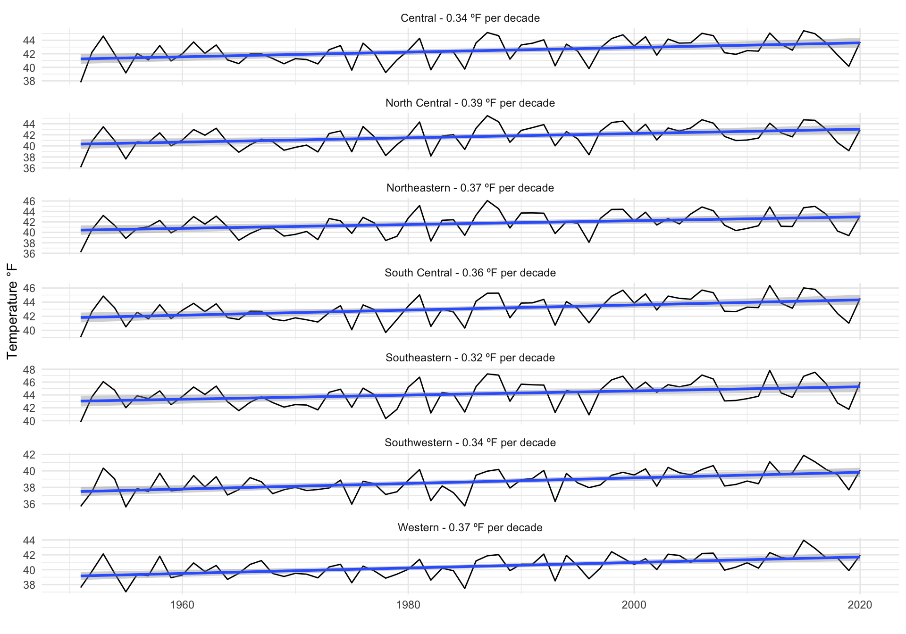

3 Draft Historical Climate
3.1 Climate Conditions 1991 - 2020
To assess Montana’s current climate, we analyzed climate variable data (see sidebar) from the NClimGrid climate dataset. In this section, we review average temperature and precipitation conditions from 1991-2020 as an indicator of current climate conditions.
3.1.1 Temperature
Table 3.1 shows the average seasonal temperature variation across Montana’s 7 Climate Divisions from 1981-2010. Temperatures vary across Montana, with average annual values ranging from 29.6°F to 47.6°F across the region.
| Division | Winter | Spring | Summer | Fall |
|---|---|---|---|---|
| Central | 16.8 / 27.7 / 38.5 | 37.1 / 49.6 / 62.1 | 47.2 / 62.3 / 77.3 | 22.5 / 33.2 / 43.9 |
| North Central | 13.3 / 24.6 / 35.8 | 38 / 50.9 / 63.7 | 47.7 / 62.9 / 78 | 20.4 / 31.6 / 42.8 |
| Northeastern | 10.3 / 21.4 / 32.6 | 39.6 / 52.9 / 66.2 | 50.3 / 65.3 / 80.3 | 18.8 / 30.1 / 41.4 |
| South Central | 17.2 / 28.1 / 39 | 38.1 / 50.5 / 62.9 | 48.7 / 63.5 / 78.3 | 22.7 / 33.5 / 44.3 |
| Southeastern | 14.2 / 26 / 37.8 | 40.3 / 53.6 / 66.8 | 51.4 / 66.9 / 82.4 | 20.8 / 33 / 45.2 |
| Southwestern | 15.5 / 25 / 34.6 | 33.2 / 45.1 / 57.1 | 43.4 / 57.9 / 72.4 | 20 / 29.4 / 38.9 |
| Western | 19.3 / 27.6 / 35.9 | 35.3 / 47.1 / 58.9 | 44.5 / 59 / 73.4 | 23.6 / 31.2 / 38.9 |
Seasonal temperatures across Montana vary, with seasonal average Winter, Spring, Summer and Fall temperatures of 25.7°F, 50.1°F, 62.6°F, and 31.7°F, respectively.
3.1.2 Precipitation
Table 3.2 shows the seasonal variation of precipitation across Montana’s 7 Climate Divisions from 1981-2010. The average annual precipitation for Montana is 19.6.
| Division | Winter | Spring | Summer | Fall |
|---|---|---|---|---|
| Central | 2.7 | 8.0 | 4.4 | 3.2 |
| North Central | 2.2 | 6.8 | 4.0 | 2.6 |
| Northeastern | 1.2 | 6.6 | 4.7 | 1.9 |
| South Central | 3.2 | 7.6 | 4.0 | 3.8 |
| Southeastern | 1.6 | 7.2 | 4.3 | 2.2 |
| Southwestern | 4.6 | 8.2 | 4.1 | 5.0 |
| Western | 9.2 | 8.7 | 4.1 | 9.9 |
3.2 Historical Trends 1951 - Present
We evaluated how temperature and precipitation have historically changed, dating back to 1950. This review of historical trends helps us provide context for future climate change scenarios explored in later sections of this chapter. In addition, evaluating these trends can help us better understand a) how Montana has previously experienced and responded to changing climate, b) if projections of future change reveal a different climate than we have previously experienced, and c) the potential impacts of that projected change.
The presentation of trends that follows is confined to the period from 1950-2020 using data from NOAA’s NClimGrid Dataset (1). This is widely acknowledged as the benchmark period in climate analysis (2), a period when our network of meteorological sensors becomes more accurate and sufficiently dense.
3.2.1 Temperature
Table 3.3 shows the decadal rate of change from 1950-2020 for average annual temperatures across Montana’s 7 Climate Divisions. We provide that rate of change both annually and by season for Montana. We also present the average annual and average seasonal changes across the region. To account partially for autocorrelation we considered trends as significant with a conservative p value at p<0.05.
| Division | Annual | Winter | Spring | Summer | Fall |
|---|---|---|---|---|---|
| Central | 0.26 | 0.39 | 0.49 | 0.26 | 0.19 |
| North Central | 0.29 | 0.57 | 0.48 | 0.27 | 0.17 |
| Northeastern | 0.25 | 0.53 | 0.49 | 0.22 | 0.15 |
| South Central | 0.28 | 0.35 | 0.50 | 0.32 | 0.25 |
| Southeastern | 0.23 | 0.43 | 0.42 | 0.20 | 0.22 |
| Southwestern | 0.27 | 0.24 | 0.56 | 0.29 | 0.23 |
| Western | 0.30 | 0.31 | 0.47 | 0.38 | 0.28 |
| Statewide | 0.27 | 0.42 | 0.49 | 0.28 | 0.21 |
The rate of temperature change across Montana was 0.27°F/decade (Table 3.3). Across Climate Divisions average annual minimum and maximum temperature changes ranged from 0.16-0.15°F/decade, respectively. Between 1950 and 2020, Montana’s average annual temperature has increased by 1.86°F; annual maximum and minimum temperatures have increased by approximately 1.1°F and 1.03°F, respectively.

3.2.2 Precipitation
Table 3.4 shows the decadal rate of change from 1950-2020 for average total precipitation across Montana’s 7 Climate Divisions. We provide that rate of change both annually and by season for Montana. We also present the average annual and average seasonal changes across the region. To account partially for autocorrelation we considered trends as significant with a conservative p-value at p<0.05.
| Division | Annual | Winter | Spring | Summer | Fall |
|---|---|---|---|---|---|
| Central | 0.13 | -0.07 | 0.09 | 0.00 | 0.13 |
| North Central | 0.00 | -0.06 | 0.07 | -0.11 | 0.16 |
| Northeastern | 0.32 | 0.00 | 0.15 | 0.00 | 0.14 |
| South Central | 0.19 | 0.00 | 0.10 | -0.08 | 0.13 |
| Southeastern | 0.37 | 0.00 | 0.27 | 0.00 | 0.13 |
| Southwestern | 0.00 | -0.08 | 0.07 | -0.09 | 0.09 |
| Western | -0.28 | -0.44 | 0.08 | -0.11 | 0.00 |
| Statewide | 0.12 | -0.10 | 0.12 | -0.07 | 0.12 |
The rate of precipitation change across Montana was 0.12in./decade (Table 3.4). Between 1950 and 2020, Montana’s average annual precipitation has increased by 0.83 inches.
3.3 Extreme aspects of Montana’s climate
Along with analyzing historical trends in temperature and precipitation, we performed an analysis of changes in extreme climate events since the middle of last century. Two examples of climate extremes include periods of intense warm or cool temperatures and significant wet or dry spells across seasons. Because these events affect every aspect of our society, decision makers and stakeholders are increasingly in need of historical evaluations of extreme events and how they are changing from seasons to centuries. Since 1951, our analysis shows the average winter temperature has increased by 0.42°F/decade across the state, with an overall average winter temperature increase of 2.898°F. Average spring temperatures have increased by 3.381°F during the same period, and average summer temperatures have risen by 1.932°F. Montana’s fall average temperatures have increased by 1.449°F since 1951.
We performed our analysis of climate extremes using extreme climate indices outlined by the CLIMDEX project (CLIMDEX undated). The extreme climate indices were derived using NClimGrid data. Extreme precipitation events across the United States have increased in both intensity and frequency since 1901 (NCA 2014), including across both the High Plains and the northwestern US (many states combined), where studies have shown an increase in the number of days with extreme precipitation (NCA 2014). Here, we report change in temperature extremes for Montana and, for perspective, the climate normals for these extremes for the periods 1951-1980 and from 1991-2020 (Table 3.5).
| Variable | 1951-1980 | 1991-2020 | Change (1951-2020) |
|---|---|---|---|
| Frost Days | 191.0 | 185.5 | -6.0 |
| Icing Days | 60.5 | 50.5 | -8.5 |
| Max Monthly Temperature (°F) | 83.7 | 84.5 | 1.0 |
| Min Monthly Temperature (°F) | 3.7 | 6.7 | 2.9 |
| Growing Season Length (Days) | 193.0 | 204.5 | 9.5 |
| Summer Days | 69.5 | 75.5 | 5.5 |
The annual number of frost days and the number of icing days are decreasing across Montana We use the CLIMDEX definition of frost days (icing days) as the number of days in a year when minimum (maximum) temperature is below 32°F. Coincident with warming temperatures, the number of frost days each year during the period from 1951-2010 has decreased by 6 days. Along with this trend, the number of days in which the maximum temperatures are below 32°F (0°C; i.e. icing days) has decreased by 8.5 days during this time period. These trends have contributed to an overall increase in the growing season length of 9.5 days between 1951 and 2010. In addition, the number of summer days, where maximum temperature exceeds 77°F (25°C) based on historical conditions, has increased by 5.5 days over this period. At a sub-annual level, monthly maximum and minimum temperatures have also changed. These are defined as the monthly maximum (minimum) value of daily maximum (minimum) temperatures. Monthly minimum values of daily minimum temperatures have increased by 2.9°F from the period 1951-2010. Over the same time period, monthly minimum values of daily maximum temperatures have increased by 1°F